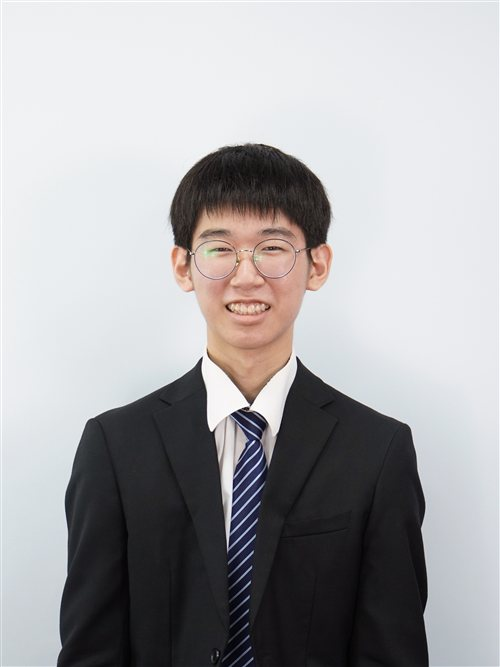
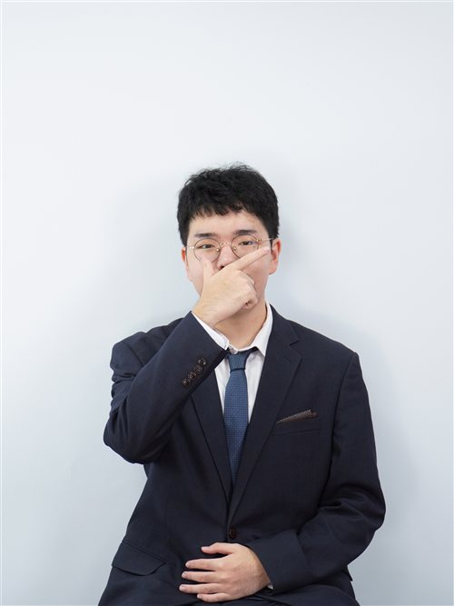

Honorable chairs, fellow delegates, and distinguished staff, I am Hyo Seok Choi, the Head Chair of WHO(1). I am honored to serve as a chair for KISMUN 26, and I hope that our committee will have a brilliant debate over the days.
MUN can sometimes feel overwhelming for delegates, with difficult topics and formal procedures. When I first started my MUN journey, I felt the same. I was a quiet and shy delegate, and I hesitated before when I raised my placard. Although some people may think otherwise, I believe that MUN is about taking the initiative to speak up, and growing and speaking more with every debate.
This year's slogan, "Value Your Voice, Voice Your Value.", reminds us that every thought you share, no matter how small, carries invaluable significance. In WHO, we focus on major global health issues that impact precious lives around the world. Because every life holds immeasurable value, every voice in this committee is crucial regarding bringing meaningful solutions to the debate.
As your chair, I am fully dedicated to creating a supportive and engaging environment for all delegates, and I look forward to listening to the passionate speeches over the next 3 days.
Best regards,
Hyoseok Choi
Head Chair of World Health Organization(1)
KISMUN 2026

Distinguished delegates, honorable chairs, staff members and respected directors, this is the Deputy Chair of WHO(1), See Young Van, and welcome to KISMUN 26!
It is a great honor for me to serve you in KISMUN. I am looking forward to have a fruitful experience in this conference with each one of you. I'll do my best to engage and support the committee with an impartial perspective during our procedure.
Formal MUN procedures are able to easily intimidate or make students nervous, and I was no exception. My MUN journey began in KISMUN 23, I applied as a delegate for the UNDP committee, just finishing the advanced course at that time. Back then, I was a timid boy who struggled to participate in writing resolutions and making POIs. What I want to say is, that no one is perfect on their first shot, and anyone can make mistakes. That is why I believe it is important not to fear failure but to face them. There is a famous quote that says:
"Take Chances, Make Mistakes, and Get Messy!"
Just like this phrase, I hope that all of you participating in this conference will use this opportunity to value your voices.
With anticipation,
SeeYoung Van
Deputy Chair of the World Health Organization
KISMUN 2026